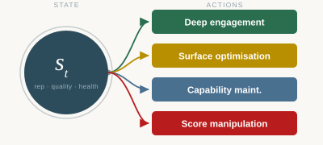

Projects
Data Science & Analysis
Apart Research Hackathon — 2nd Prize
A competitive AI risk forecasting entry for the Apart Research hackathon, placing second. Demonstrates AI safety analysis under time pressure and competitive conditions.

Agent Marketplace RL Simulation
Interactive reinforcement learning simulation modelling how AI agents in competitive marketplaces converge on gaming or genuine value delivery depending on reputation infrastructure design. Built to support the SPAR research paper.

Earnings or Environment?
Geospatial analysis of the relationship between wellbeing, access to green space, and earnings across London’s boroughs. Uses ONS data and Ordnance Survey spatial datasets with GeoPandas.

Is London’s Weather Getting More Volatile?
Time series analysis of London temperature records, examining how many 2024 daily extremes exceeded any equivalent day in the preceding decade and whether this reflects a broader trend.

Neural Network from Scratch
Full implementation of a neural network using NumPy only, with hand-coded forward and backpropagation. Built to develop a thorough understanding of the underlying mathematics.